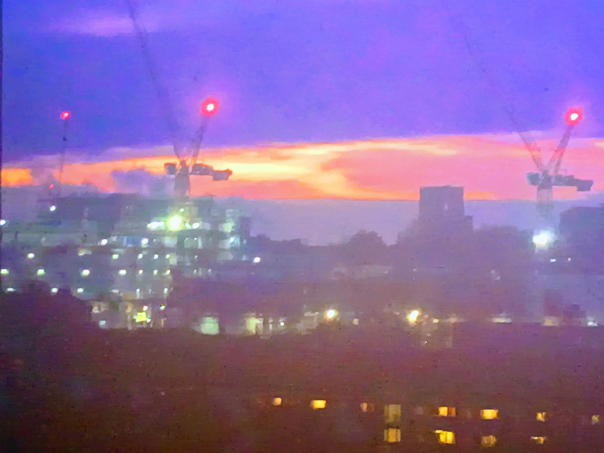

NOTTINGHAM // CREATIVE MUSIC TECHNOLOGY // BA (HONS)
• BANDCAMP_NODE
• AUDIO_LOGS
• VISUAL_DATA
Multimedia anti-music architecture operating out of Nottingham. Built on a hybrid lineage of mixed European-South Asian ancestry.
The mission rejects professional polish. We hijack tempos, process localized field recordings, and construct corroded, lo-fi experimental textures to force structural friction.
Sonic frameworks span across dark ambient drone, trippy downtempo, distorted big beat, techstep, cyber punk, and the heavy atmospheric weights of the Asian underground.
 RAW DATA FRAGMENTS:
RAW DATA FRAGMENTS:
